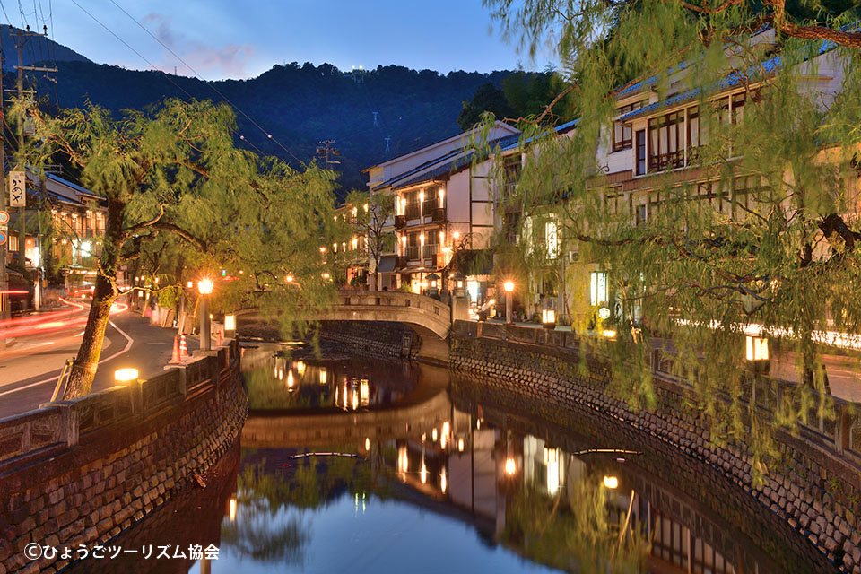

Osaka is the capital of West Japan and the kitchen of Japan.
Kyoto is the old capital of Japan with lots of temples and history.

Kinosaki is famous for crabs and hot springs, located in norther part of Hyogo.
